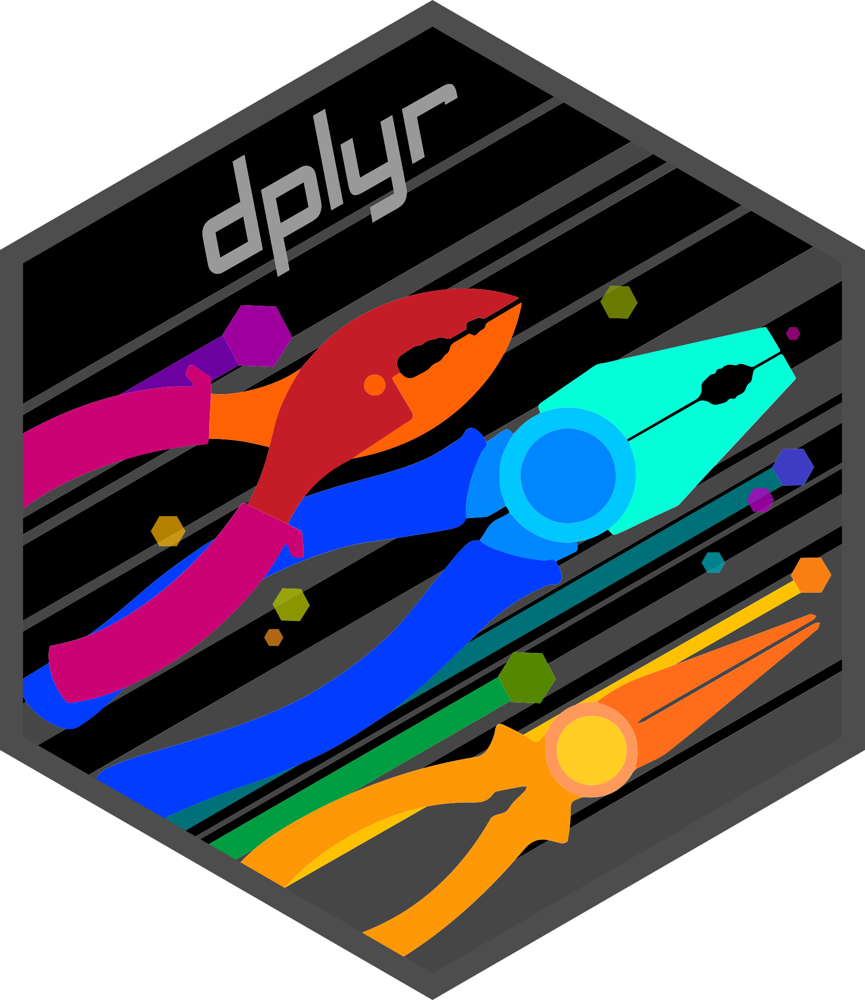
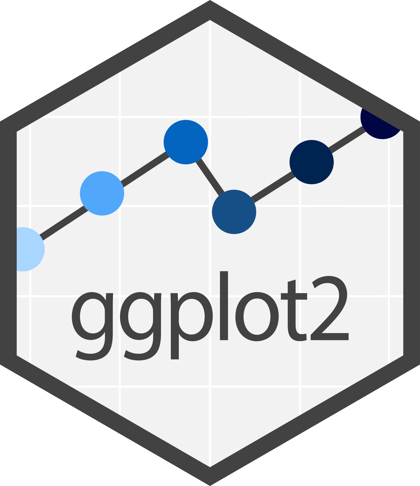
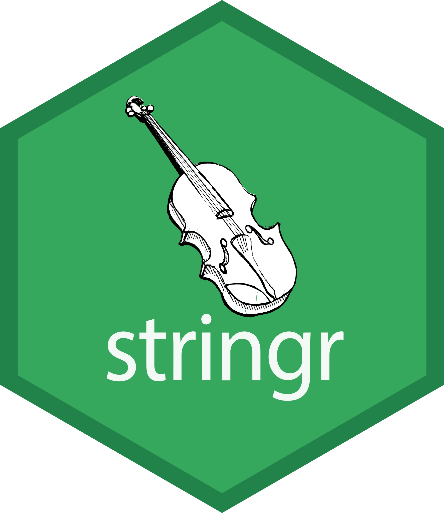
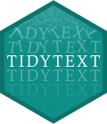

Teaching
I currently teach INTL 7007, Data Analytics for International Policy Professionals, in the Master of International Policy program at the University of Georgia. In this class, we cover:






Below, you can find some of the hands-on activities that I use in class.
Week 2
R Basics & The Weighted Dice
Your first hour in R. Arithmetic and objects, vectors, functions and their arguments, writing a function of your own, and running a simulation ten thousand times, ending with a pair of dice you have quietly weighted.
Adapted from Grolemund, Hands-On Programming with R, ch. 1–3.
Week 3
Coding With an LLM, Part I: Prompt It
Twenty minutes on the one skill that makes AI genuinely useful for code. Students load a 229,444-row dataset and estimate a treatment effect, having been taught neither, and find out why how you ask decides whether you get an answer or a fabrication.
Uses Gerber, Green & Larimer (2008) on social pressure and voter turnout.
Week 6
Warming up: Quarto
A quick check on a pair-programming task. Take apart a .qmd file, fix a broken header, find the one code chunk that actually runs, and predict what the rendered page will look like.
Reviews Pair Programming 2: Quarto in R.
Week 10
ggplot2
Pair-programming activity.
Based on Wickham, Çetinkaya-Rundel & Grolemund, R for Data Science (2e), ch. 1.
The Carpentries
I am a certified instructor with The Carpentries, a nonprofit that teaches foundational coding and data science skills to researchers worldwide. I regularly use their open, community-developed lessons in my classes.